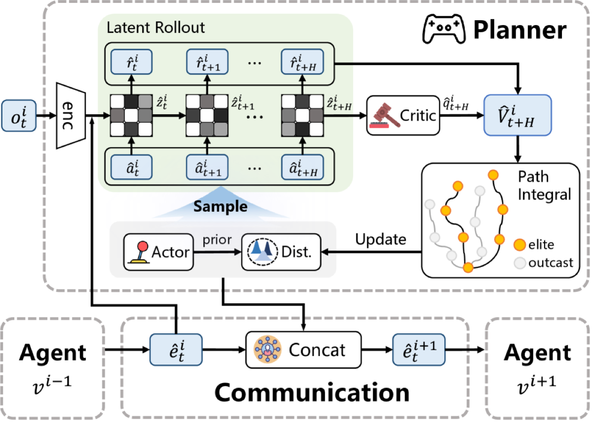

Why it matters왜 중요한가
The bottleneck of multi-robot model-based RL isn't the policy — it's modeling everyone's dynamics at once.
멀티로봇 모델 기반 RL의 병목은 정책이 아니라, 모두의 동역학을 한 번에 모델링하는 일이다.
Two camps have dominated. Decentralized world models give each robot its own model but ignore the coupling between robots, so coordination falls apart. Centralized models capture coupling by predicting the full joint state-action space — but the complexity explodes with the number of agents and action dimensions, blocking real deployment. SeqWM borrows the sequential (autoregressive) paradigm from multi-agent RL: agents act and communicate in a fixed order, each conditioned on its predecessors. This decomposes the joint dynamics into per-agent models — keeping coordination, killing the complexity.
지금까지 두 진영이 있었다. 분산형(decentralized) 월드 모델은 로봇마다 자기 모델을 주지만 로봇 간 결합을 무시해 협력이 무너진다. 중앙집중형(centralized)은 전체 결합 상태-행동 공간을 예측해 결합을 잡지만, 에이전트 수와 행동 차원에 따라 복잡도가 폭증해 실배치를 막는다. SeqWM은 멀티에이전트 RL의 순차(autoregressive) 패러다임을 가져온다. 에이전트들이 정해진 순서로 행동·통신하고, 각자 자기 앞 에이전트에 조건부로 작동한다. 이로써 결합 동역학을 에이전트별 모델로 분해 — 협력은 유지하고 복잡도는 죽인다.

By the numbers핵심 숫자
(default, RTX A6000)스텝당 실행 시간
(기본 설정, RTX A6000)
(only ~5.9% perf loss)조기 종료로 시간 절감
(성능 손실 ~5.9%뿐)
(Multi-Quad tasks)도달한 성공률
(Multi-Quad 과제)
(Bi-DexHands Over/Scissors)준최적까지 스텝
(Bi-DexHands Over/Scissors)
test (Gate task)확장성 실험 에이전트 수
(Gate 과제)
quadrupeds deployed실배치한 실물
Unitree Go2-W 4족
Ablations — what actually carries the method결과 — 무엇이 진짜 효과를 내나
| Ablation axis제거 축 | Variant변형 | Outcome결과 |
|---|---|---|
| Dynamics structure동역학 구조 | Sequential vs Centralized vs Decentralized | Seq ≈ Central, both ≫ DecentralizedSeq ≈ Central, 둘 다 분산형 ≫ |
| Communication fusion통신 융합 | Concat vs MLP / Cross-attn / RNN | Concat highest & most stable; RNN < no-commConcat 최고·최안정; RNN은 무통신보다 낮음 |
| Intention sharing의도 공유 | SeqWM vs DecWM / SeqFree | Full SeqWM best — both rollout + sequential msg needed완전한 SeqWM 최고 — 롤아웃 + 순차 메시지 둘 다 필요 |
In one diagram한 장의 그림
The two halves: model, then plan두 축: 모델링, 그다음 계획
Sequential World Modelling
Treat each agent's observation-action pair as a token. Agent 1 predicts its next latent state + reward and passes it on; agent i predicts conditioned on its own state plus all predecessors' predictions. Each agent owns independent MLP modules (encoder / dynamics / reward / critic / actor) — no parameter sharing, so it deploys in a distributed way. The actor is trained with HASAC.
각 에이전트의 관측-행동 쌍을 토큰으로 취급. 에이전트 1이 다음 잠재 상태+보상을 예측해 넘기고, 에이전트 i는 자기 상태 + 앞선 모든 에이전트의 예측에 조건부로 예측한다. 에이전트마다 독립 MLP 모듈(encoder/dynamics/reward/critic/actor) 보유 — 파라미터 공유 없음이라 분산 배치 가능. actor는 HASAC로 학습.
Sequential MPPI Planning
Real decisions come from a Model-Predictive Path-Integral planner. Each agent samples N action sequences (some from a Gaussian, some from the actor), rolls them out H steps in its world model, scores each by predicted reward + terminal critic value, keeps the elite set, and refines the distribution K times. A communication cache lets execution be serial-blocking-free — latency barely grows with agent count.
실제 결정은 Model-Predictive Path-Integral 플래너가 한다. 각 에이전트가 N개 행동열을 샘플(일부 가우시안, 일부 actor)해 월드 모델로 H 스텝 롤아웃, 예측 보상 + 종단 크리틱 값으로 점수 매겨 엘리트 집합을 남기고 분포를 K번 정제. 통신 캐시로 직렬 블로킹 없는 실행 — 에이전트 수가 늘어도 지연이 거의 안 커진다.
How it works어떻게 작동하나
- Encode & receive인코딩 & 수신Agent vi encodes its observation to a latent zi and receives a message ei — the concatenated predicted latents and planned actions of all predecessors (agent 1 gets an empty message).에이전트 vi가 관측을 잠재 zi로 인코딩하고, 앞선 모든 에이전트의 예측 잠재 + 계획 행동을 concat한 메시지 ei를 수신(에이전트 1은 빈 메시지).
- Sample & roll out샘플 & 롤아웃Draw N candidate action sequences (Gaussian + actor prior), then roll each out H steps through the local world model to predict future latents and rewards.N개 후보 행동열을 샘플(가우시안 + actor prior)하고, 로컬 월드 모델로 각각 H 스텝 롤아웃해 미래 잠재·보상을 예측.
- Score & refine평가 & 정제Value each trajectory as summed predicted reward + terminal critic value; keep the top-M elite and shift the action distribution toward them, iterating K times (with low-pass action smoothing for real robots).각 궤적을 누적 예측 보상 + 종단 크리틱 값으로 평가; 상위 M개 엘리트를 남겨 행동 분포를 그쪽으로 이동, K번 반복(실물 로봇용 저역통과 행동 평활화 포함).
- Pass intention forward의도 전달Send vi's predicted trajectory + chosen action onward to vi+1. Training adds random agent-order permutation and random comm masking for robustness to ordering and communication failures.vi의 예측 궤적 + 선택 행동을 vi+1로 전달. 학습 시 무작위 에이전트 순서 치환 + 무작위 통신 마스킹으로 순서·통신 실패에 견고화.
What to take away그래서, 가져갈 것
Decompose, don't centralize. A chain of per-agent world models reaches centralized-level prediction accuracy while staying cheap enough to run at 12.8 ms/step and deploy on real quadrupeds.
중앙집중 말고 분해하라. 에이전트별 월드 모델의 사슬이 중앙집중형 수준의 예측 정확도에 도달하면서도, 12.8 ms/스텝으로 돌리고 실물 4족에 배치할 만큼 가볍다.
Intention sharing = emergent cooperation. Passing predicted trajectories lets behaviors like predictive adaptation, temporal alignment, and role division emerge — not hand-coded.
의도 공유 = 창발적 협력. 예측 궤적을 넘기는 것만으로 예측적 적응·시간 정렬·역할 분담 같은 행동이 창발한다 — 수작업 코딩이 아니다.
Simple beats clever in fusion. Plain concatenation outperformed MLP / cross-attention / RNN fusion — RNN even did worse than no communication.
융합은 단순한 게 이긴다. 단순 concat이 MLP·cross-attention·RNN 융합을 능가 — RNN은 무통신보다도 못했다.
Sim-to-real held. PushBox / Gate / Shepherd behaviors transferred to two Unitree Go2-W robots, matching simulated yielding and force-coordination.
Sim-to-real 성립. PushBox·Gate·Shepherd 행동이 Unitree Go2-W 2대로 전이돼, 시뮬레이션의 양보·힘 조율을 재현.